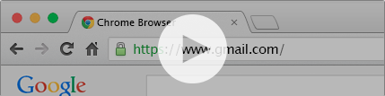

Getting started
GOTO is a Chrome extension that helps you navigate through all your most favorite websites. It allows to create ‘textual’ shortcuts that you can use directly within the url bar.
It is available directly from the Chrome Web Strore”. Once installed you’ll be able to add shortcuts!
How does to use it?
Let’s assume you that you created from the extention a new shortut ‘g’ associated to the url of gmail:
g
https://www.gmail.com
You now just have to use this shortcut wihtin the URL bar, end it with a ’/’ , and press endter. You will then be redirected to the associated URL:
Bring your shorcuts with you everywhere as they will be associated with your Google account.
Although the extension is asking for a lot of permission, it is only to acces to easy redirection functionnalities. The code is open source and can be reviewed easily if any doubt concerning privacy issues.
Contribute
If you know you way around Javascript, there is plenty of simple ways to improve GOTO. Checkout the Github repository and don’t hesitate
Alexis Fasquel